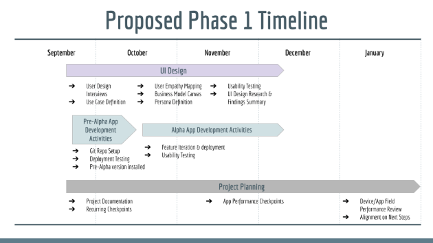

Weddell Seal Mark Recap Project Summary
Designing and building an app in parallel to support Montana
State research in Antarctica was an opportunity I couldn't
pass up!
Problem Statement
Weddell Seal Science researchers currently conduct data entry using traditional
field research methods augmented with expensive, inflexible technology that is
not expected to be viable beyond the 2023 field season. The research project funded
by the National Science Foundation through 2026 needs new technology to capture data
and continue to augment the existing 50+ year dataset.
For more information about the science check out the website:
Weddell Seal Science
Five steps taken to develop a design grounded by user experience are summarized below.
Empathize
Research the Users' Needs
I conducted 5 discovery interviews with the lead researchers, principle investigator,
a former field technician, and a customer experience consultant. These rich conversations
provided critical
guidance and direction.
UI Design Process Outputs: Empathy Maps (5) and Use Cases (3)
Key Findings
- Data accuracy was expressed as a top priority by all teammates
- Financial viability could be low given the resource constraints that most research teams
balance
Define
State the Users' Needs & Problems
Primary Need: Efficient, accurate data collection via dependable and easy to use
technology in Antarcica's inclement weather
Problem: Aging devices are no longer reliable and are expensive to
replace
UI Design Process Outputs: Persona and Business Model Canvas
Key Findings
- Financial viability for the app likely low given typical research budgets
- Immediate financial impact of new technology is meaningful: 85% savings per field
tech
Ideate
Challenge Assumptions and Create Ideas
How might we not only replace the current application functionality but also
improve upon it by building an application that more closely
matches the current data collection process?
UI Design Process Outputs: Mind Map
Key Findings
- Revisiting efficient data entry informed the prototyping stage
- Design for experts and novices with clear labeling and organization
- Help mitigate fatigue with design choices such as colors and font
Prototype
Create Solutions
Collaboration with lead researcher through whiteboarding and sketching provided ample
input to design the next generation of Weddell Seal research technology.
UI Design Process Outputs: Low & High Fidelity Prototypes, Documention of Application
of Usability Heuristics and the UX Laws
Key Findings
- Helping users recognize and recover from errors is critical to ensuring data integrity
- Flexibility and efficiency guided decisions to pre-populate certain fields
- Simplification to reduce cognitive load decluttered early prototypes by adding additional
screens
- Applying Fitt's Law to mitigate environmental challenges resulted in larger buttons for data
entry
Test
Try Out Your Solutions
Field testing began in mid-October and with each alpha version (typically every two weeks).
Formal evaluation of the design was conducted at the end of November remotely from Antarctica
and in-person in Bozeman.
- Entering metadata on the Home Screen
- Navigating between screens
- Entering an observation
- Saving the observation
- Exporting observations
UI Design Process Outputs: Testing Methodology,
Quantitative Results from System Usabiity Scale survey,
Statistical findings with Python using pandas and matplotlib.
Key Findings
- App achieved a SUS score of 89, well above the average of 68
- Direct feedback from the team in Antarctica was overwhelmingly positive
- Several users requested options to customize the user experience, with actionable
suggestions to improve the app
